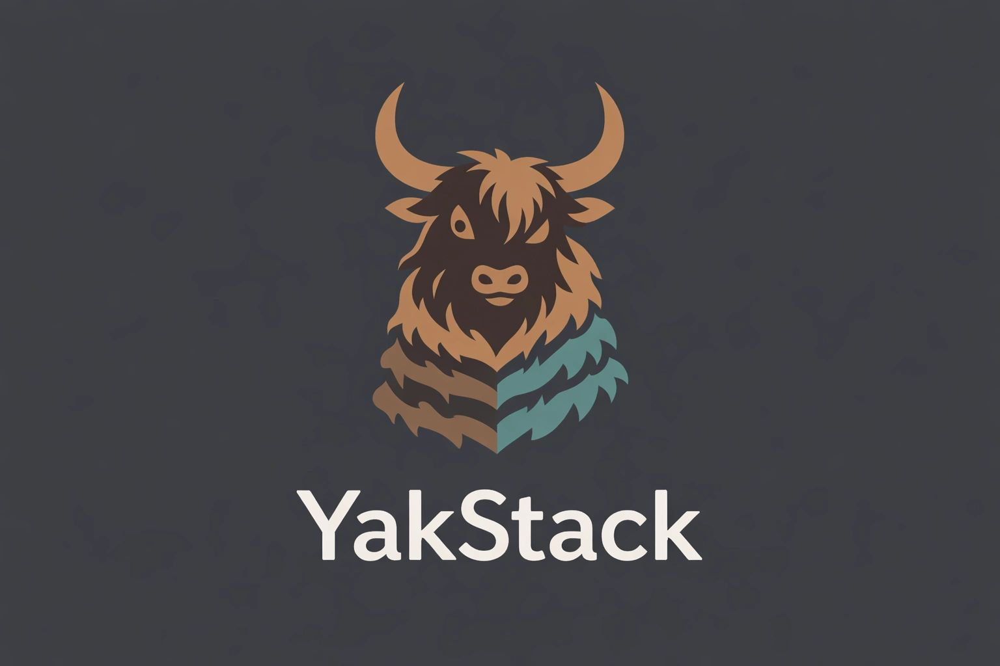

Security & compliance
SOC 2, practical controls, evidence, and audit readiness.

Practical IT consulting for security, infrastructure, and automation. We untangle the technical work so you can get back to yours.
SOC 2, practical controls, evidence, and audit readiness.
AWS, migrations, and systems you can count on every day.
Scripts, connected tools, and workflows that cut repetitive work.
Troubleshooting, investigations, and hands-on technical support.
One small technical task has a habit of turning into six. We follow the loose ends, find what’s actually wrong, and build practical fixes you can live with. Clear explanations, useful tools, and sleeves rolled up.